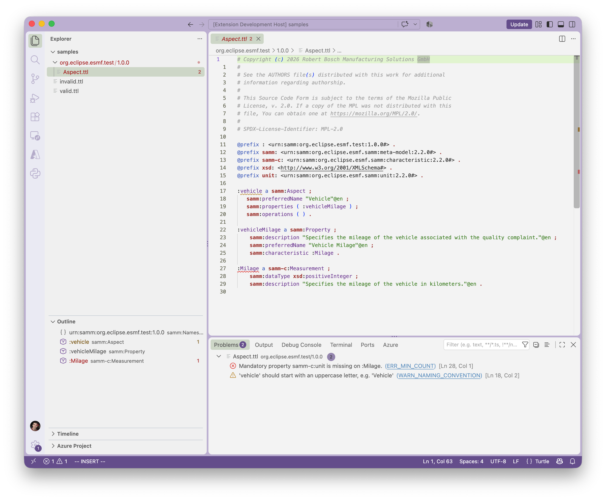

Getting Started
Opening the example workspace
First, complete the installation and SAMM CLI setup.
-
Open the esmf-examples repository and choose Code → Download ZIP. Extract the archive locally.
-
In VS Code, choose File → Open Folder… and open the extracted repository.
-
Open any Aspect Model and confirm that the language mode in the status bar is Turtle.
-
Wait for the language server to start. Syntax highlighting and the outline view should become available.
Validating and navigating a model
-
Create an arbitrary problem, e.g., by removing the closing dot of a triple.
-
Open View → Problems and select the issue about the just removed dot.
-
Re-add the dot.
-
Wait for the validation to complete. The problem reported for the missing dot should disappear.
Turtle syntax validation runs while typing. Aspect Model validation runs after a pause in editing and when saving.

If setup or validation fails, see Support.
Creating your own workspace
Create a new folder for your models and open it in VS Code.
Models must be organized in a hierarchical manner, file paths must follow the structure: namespace/version/name.ttl.
models root (open folder in VS Code)
└── com.mycompany.myproduct
├── 1.0.0
│ ├── MyAspect.ttl
│ ├── MyEntity.ttl
│ └── myProperty.ttl
└── 1.1.0
└── MyAspect.ttlThe namespace and version directories must match the namespace and version in the model URNs.
For example, files in com.mycompany.myproduct/1.0.0 use @prefix : <urn:samm:com.mycompany.myproduct:1.0.0#> ..
Read more about models directory structure and model resolution.